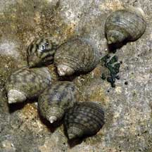
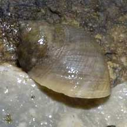
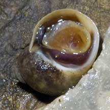

|
|
| shelled snails text index | photo index |
| Phylum Mollusca > Class Gastropoda > Family Littorinidae |
| Round
periwinkle snail Echinolittorina sp. Family Littorinidae updated Aug 2020 Where seen? This little snail with an almost spherical shell is seen on some of our rocky shores. Usually near the high water mark on large boulders. Usually in small numbers, and often among other kinds of Periwinkles. Features: 0.8-1cm. Shell is more rounded than other periwinkles commonly found in the same zone. Shell thin with fine grooves. Colour and pattern variable. Operculum thin, circular, made of a horn-like material. Several species of periwinkles have round shells including Echinolittorina vidua and Echinolittorina melanacme. |
|
 Sentosa, Oct 03 |
 East Coast Park, Jun 06 |
 East Coast Park, Jun 06 |
*Species are difficult to positively identify without close examination.
On this website, they are grouped by external features for convenience of display.
| Round periwinkle snails on Singapore shores |
On wildsingapore
flickr
|
|
Acknowlegement References
|